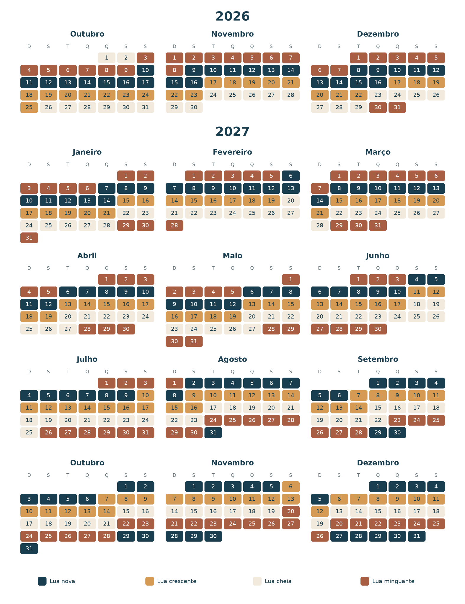

Tempo, lua e maré
Conheça as condições climáticas e ambientais para sua pescaria
Previsão da semana
Planeje sua pescaria com o clima em mente
Veja a previsão da semana. Mesmo com chuva, pode sair peixe — então consulte a pousada para entender as condições do rio nos dias em que você pretende pescar.
Garuva, SC
--°
Carregando previsão...
Carregando previsão da semana...
Previsão automática para Garuva/SC.
Fases da lua
Veja como a lua pode influenciar
Essas referências seguem o conhecimento e a experiência de anos do Nereu, acompanhando a pescaria na região.
Calendário lunar
2026–2027
Role para baixo ↓
Dê zoom no mês que você tem interesse em ir pescar

Além da lua
Marés
A maré também pode influenciar a pescaria, alterando o nível da água, a força da corrente e a movimentação dos peixes no estuário. O melhor momento depende da combinação das condições do dia e do ponto de pesca.